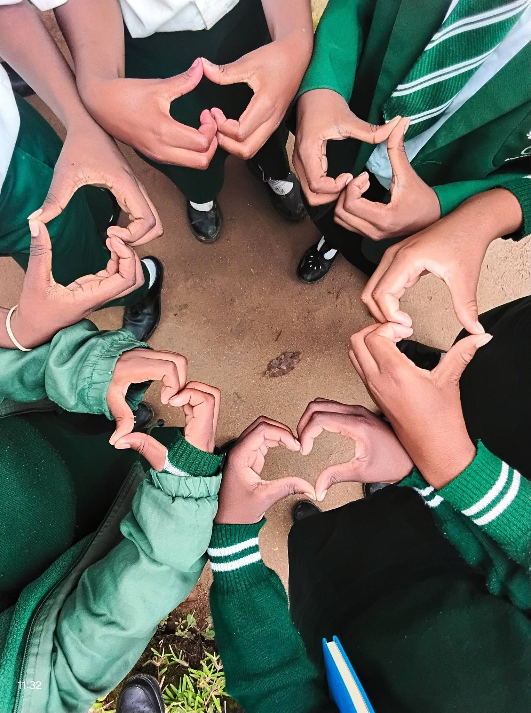

LEARNING
Learning Beyond the Lesson
Classroom learning can be enriched through practical tasks, questions, group work, and opportunities to apply new knowledge.
BELONG • PARTICIPATE • GROW
Discover the experiences, friendships, and opportunities that can make the school journey meaningful at Joyce Banda Foundation Schools.
Explore Student LifeLIFE AT OUR SCHOOL
At Joyce Banda Foundation Schools in Chimwankhunda, Blantyre, Malawi, school life is about more than lessons. It is also about developing confidence, building positive relationships, discovering interests, and learning to contribute to a community.
Every learner's experience is unique. Families can contact the school to find out which clubs, sports, activities, and events are currently available during the school year.
Learn about our school
MAKE EVERY DAY COUNT
Explore some of the important parts of a well-rounded school experience. Contact the school to confirm the activities offered this year.
Classroom learning can be enriched through practical tasks, questions, group work, and opportunities to apply new knowledge.

Cultural activities can help learners appreciate traditions, express creativity, and learn to respect different experiences and perspectives.

Where organised, educational trips and special activities can give learners new experiences beyond the classroom.

Recognising effort and progress gives learners a chance to reflect on their journey and celebrate important milestones.

Positive relationships help children practise teamwork, empathy, cooperation, and respect for one another.

School events can bring learners, families, teachers, and the wider school community together around shared experiences.
These descriptions outline possible areas of school life and are not a confirmed list of official clubs, sports, or recurring events. Please check current activities with the school.

GROWING AS A PERSON
School is an opportunity to develop habits and values that support learning, relationships, and future goals.
Listening to others, valuing differences, and treating people with consideration.
Taking care of learning materials, completing tasks, and making thoughtful choices.
Working together, sharing ideas, and helping others reach common goals.
Trying new things, asking questions, and learning from mistakes.
FAMILIES ARE PART OF THE JOURNEY
Parents and guardians are important partners in a learner's education. Staying informed about school notices, attending scheduled meetings, and communicating with teachers can help learners feel supported.
A GLIMPSE OF SCHOOL LIFE
DISCOVER OUR SCHOOL
Would you like to learn more about the school, educational pathways, or joining our community? Our team can help answer your questions.
Chimwankhunda, Blantyre, Malawi